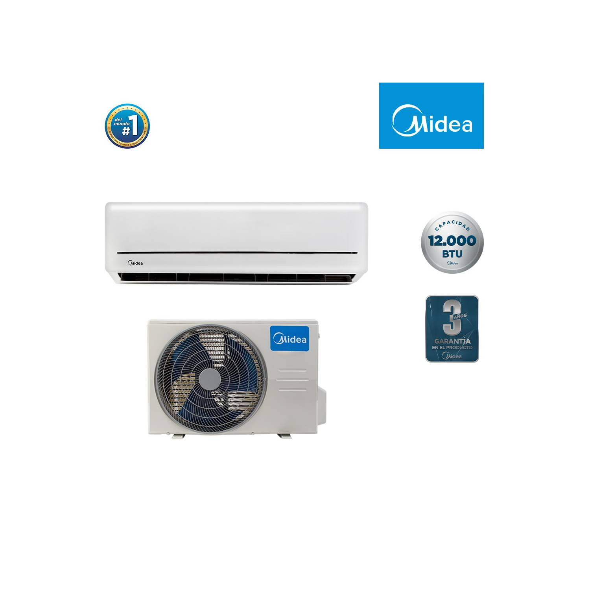

| Código |
Imagen |
Nombre |
Descripción |
Precio |
| A1 |
 |
Licuadora |
LICUADORA SINDELEN L-1500NG
Batidos, jugos de frutas y mucho más es lo que puedes preparar con nuestra licuadora PowerMix L-1500NG. Con capacidad de 1,5 lt, tiene 2 velocidades y una resistente jarra de plástico. |
$39.990 |
| A2 |
 |
Refrigerador |
Refrigerador Top Freezer con motor Smart Inverter Compressor y capacidad total de 254 Litros |
$259.990 |
| A3 |
 |
Microondas |
Simplifica la preparación de tus recetas favoritas con el Microondas 20L Manual Negro Mademsa (MM20FBM). Su panel ofrece la comodidad que tu rutina en la cocina merece, ya que cuenta con modos de preparación preprogramados en su panel de dos mandos mecánicos, súper fácil de ajustar. |
$59.990 |
| A4 |
 |
Cocina |
Cocina Gas Midea 4 Quemadores MCG-4QI24NS |
$189.990 |
| A5 |
 |
Aire acondicionado |
ON-OFF .
CLIMATIZA 25 M2
BAJO RUIDO.
MODO TURBO.
FUNCIÓN AUTO RESTART.
DESHIELO AUTOMÁTICO.
TIMER 24 HORAS.
FILTRO DE ALTA DENSIDAD.
CONTROL WI FI (VENTA POR SEPARADO). |
$250.000 |
| A6 |
|
Ventilador |
Ambiente fresco y confortable.
El ventilador Midea crea rápidamente un clima de frescura gracias a sus 3 niveles de potencia y cabezal oscilante. Su innovador motor de cobre garantiza un óptimo rendimiento y una gran durabilidad.
Calidad y alta funcionalidad para lograr bienestar en todos los espacios. |
$69.990 |
| A7 |
 |
Aspiradora |
ASPIRADORA COMPACTA, 1600W DE POTENCIA, POTENCIA DE SUCCIÓN 280W, CAPACIDAD 1.5 LT. NO NECESITA BOLSA, SISTEMA CICLÓN ELÍPTICO. |
$49.990 |
| A8 |
 |
Califont |
Essential 8 Eco GL
Sistema de seguridad
Sus múltiples sistemas de seguridad garantizan el buen funcionamiento de su calefón y su bienestar.
Ecológico
Utiliza un intercambiador de calor de cobre libre de oxígeno, lo que lo hace más amigable con el medio ambiente.
Eficiente
La avanzada tecnología de sus quemadores e intercambiador de calor, resultan en un calentamiento de agua más eficiente.
Encendido electrónico
Con solo abrir la llave de agua caliente. |
$119.990 |
| A9 |
 |
Lavadora |
Lavadora de Carga Superior con motor Smart Inverter y capacidad total de 19 kilos WT19BSB. Este modelo cuenta con características principales como un diseño sofisticado y tecnología de primera como la de su motor Smart Inverter con 10 años de garantía. Gracias al motor Smart Inverter el tambor logra tener un funcionamiento con 3 tipos de movimientos, que logra brindar un mejor desempeño de lavado y resultados de lavado en las prendas. |
$358.990 |
| A10 |
|
Centrifuga |
Lavadora centrífuga semiautomática carga superior modelo LC-4550 de Sindelen. Cuenta con una capacidad de lavado de 4.2 Kg. ropa seca y una capacidad de centrifugado de 3.2 Kg. Es bajo ruido y posee un sistema Reversomatic que reduce el enredo de la ropa mientras se lava.
|
$119.990 |